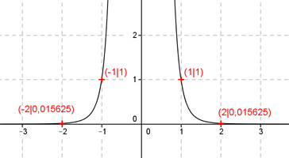

Aufgabe 42 Ergänzen Sie die Wertetabelle für den Graphen: y = x-6 x 2 oder - 2 1 oder -1 y 0,015625 1 f(x) = 0,15625 eingesetzt: 0,015625 = x-6 1 0,015625 = ---- | *x6 x6 0,015625 * x6 = 1 | :0,015625 1 x6 = ------------ = 64 0,015625 x = = 2 oder -2 f(x) = 1 eingesetzt: 1 = x-6 1 1 = ---- | *x6 x6 x6 = 1 x = = 1 oder -1
